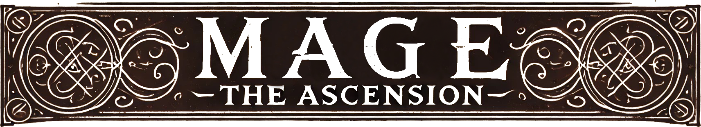

<div class="background">
  <div class="bg-l bg-side"></div>
  <div class="wrapper">
    <div class="counter-ctr" *ngIf="false">
      <strong style="font-size: 14px;" class="mat-mdc-radio-button mat-internal-form-field">Define Counter type: </strong>
      <mat-radio-group
        aria-labelledby="example-radio-group-label"
        [(ngModel)]="counterType">
        @for (counter of counterTypes; track counter) {
        <mat-radio-button [value]="counter.key">{{counter.label}}</mat-radio-button>
        }
      </mat-radio-group>
    </div>  
    <h1 class="center">
      
    </h1>
    <div class="cool-border">
      <div class="category">
        <h2 class="center">Information</h2>
      </div>
     
        <!-- <mat-form-field class="example-full-width">
          <input type="text"
                placeholder="Pick one"
                aria-label="Number"
                matInput #input
                [formControl]="myControl"
                [matAutocomplete]="auto">
          <mat-autocomplete #auto="matAutocomplete">
            @for (option of filteredOptions | async; track option) {
              <mat-option [value]="option">{{option}}</mat-option>
            }
          </mat-autocomplete>
        </mat-form-field> -->
      
      <app-sheet-info></app-sheet-info>
    </div>
    <div class="cool-border">
      <div class="category">
        <h3 *ngIf="counterType === ECounter.CREATE" class="center">Character Creation: ( 7 / 5 / 3 )</h3>
        <h2 class="center">Attributes</h2>
      </div>
      <app-section [counterType]="counterType" [desc]="attributesDesc" [type]="EStat.ATTRIBUTE"></app-section>
    </div>
    <div class="cool-border">
      <div class="category">
        <h3 *ngIf="counterType === ECounter.CREATE" class="center">Character Creation:  ( 13 / 9 / 5 )</h3>  
        <h2 class="center">Abilities</h2>
      </div>
      <app-section [counterType]="counterType" [desc]="skillsDesc" [type]="EStat.SKILL"></app-section>
    </div>
    <div class="cool-border">
      <div class="category">
        <h2 class="center">
          Spheres
          <span>: {{stateSvc.creationCounterState$()[EStat.SPHERE]}}</span>
        </h2>
      </div>
      <app-section [counterType]="counterType" [desc]="spheresDesc" [type]="EStat.SPHERE"></app-section>  
    </div>
    <div class="sticky-footer">
      <div class="horus-eye">
        @if(footerSvc.hasFooterState$()){
          <button [ngClass]="footerSvc.showFooter$() ? 'open' : 'closed'" (click)="footerSvc.toggle()"></button>
          @if(footerSvc.showFooter$()){
            <app-custom-snack></app-custom-snack>
          }
        }
      </div>
    </div>
  </div>
  <div class="bg-r bg-side"></div>
</div>